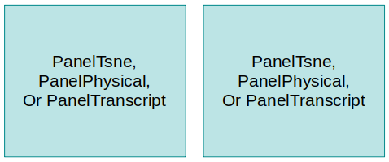
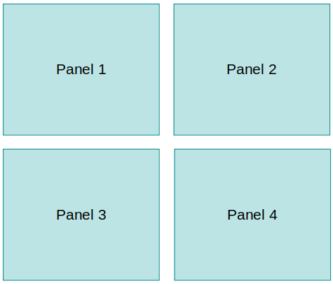
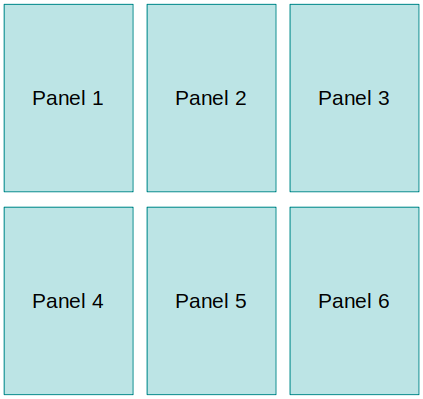
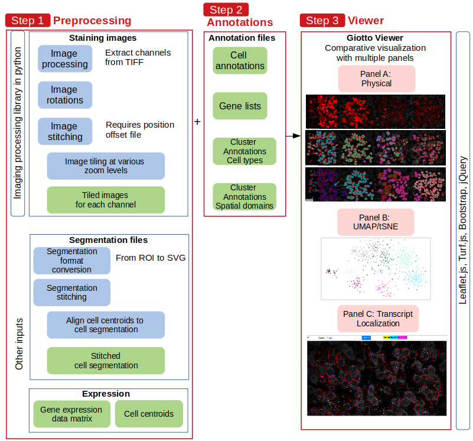

Installation
Giotto Viewer may work in any of the two cases:
1) The input data contains only a cell by gene expression matrix, and the spatial coordinates of cell centroids.
2) The input data also contains additional information such as staining images, and cell segmentations.
Cell annotations, such as spatial domains, cell types, and tSNE coordinates can also be added in addition to the above.
The way Giotto Viewer is organized on the screen is a set of panels. Each panel can be one of Physical Space Panel, Expression Space Panel (i.e. UMAP or tSNE), Transcript Localization Panel.
Panels may be arranged horizontally or vertically. Multiple panels can be composed on the screen (such as 2, 4, 6, etc) which would enable a comparison of multi-modality information.



Note that the terms field of view and position are used interchangeably throughout this tutorial.
We next describe the steps of setup.
Input data format required
Gene expression
A comma-delimited CSV file with header information. First row consists of cell IDs (integers starting at 1). First column is gene name. Values are distributed in a log-transformed scale, and preferably centered. Z-scores tend to work well.Cell centroids (unstitched)
Cell centroids per field of view. A CSV file, comma-delimited. First row consists of "Field of View, Cell ID, X, Y". Field of View refers to the field ID. Cell ID is an integer starting at 1, and unique in the whole dataset. X, Y are the coordinates.Offset file
This specifies the relative positions of FOVs. It is tab-delimited, and must be indicated in the below format:Pos0.x Pos0.y 0 0
Pos1.x Pos1.y 1654.97 0
Pos2.x Pos2.y Pos1.x+1750.75 0
Pos3.x Pos3.y Pos2.x+1674.35 0
Pos4.x Pos4.y Pos3.x+675.5 1438.02Staining images
This is a TIFF stack generally containinig DAPI, Nissl, or PolyA staining on one field of view. It is a stack because it contains multiple staining images all in the same TIFF file. The channel ID of individual staining should be noted.Cell segmentations
The segmentation of each cell should be located in its own ROI (Region-Of-Interest) file. Then all cells' segmentation files for one FOV should be zipped together in a roi zip file, for example ROI-Pos0.zip for cells in position 0.Clustering annotations
Multiple sets of cell annotations such as spatial domains, cell types can be added to the viewer. To add an annotation set, create two files, which share the same file name but differ only in the file extension. One file has (*.txt) extension and one file has (*.annot) extension. The first *.txt file contains a single-column of integer cluster membership of all cells. Each row is a cell in the same cell order as in gene expression. The second *.annot file is a tab-delimited file showing names of each cluster. e.g.
1 L2/3 exc neuron
2 inh neuron
3 microglia
4 endothelial
5 astrocyte
6 L6 exc neuron
7 OL
8 L4 exc neuron
9 L5 exc neuron tSNE/UMAP cell coordinates
For tSNE, UMAP panel, we need also cell coordinates in tSNE space. This file is a space-delimited two-column (X,Y) format. Coordinates in each dimension should be scaled from (-20, +20). Example of tSNE coordinate file: X.coord.txt.Getting the dataset:
Images and segmentations
Download the sample dataset CORTEX (cortex.tar.gz).We provide this sample dataset of the mouse visual cortex (seqFISH+) with 10,000 genes and ~500 cells spread across 5 FOVs. As you extract the zip file, you will see the following content. These files are good to illustrate the format for the aforementioned input files.
-rw-r--r-- 1 zqian gcproj 67215245 Jun 28 16:27 segmentation_staining_1_MMStack_Pos0.ome.tif
-rw-r--r-- 1 zqian gcproj 67195681 Jun 28 16:27 segmentation_staining_1_MMStack_Pos1.ome.tif
-rw-r--r-- 1 zqian gcproj 67195681 Jun 28 16:27 segmentation_staining_1_MMStack_Pos2.ome.tif
-rw-r--r-- 1 zqian gcproj 67195681 Jun 28 16:27 segmentation_staining_1_MMStack_Pos3.ome.tif
-rw-r--r-- 1 zqian gcproj 67195689 Jun 28 16:27 segmentation_staining_1_MMStack_Pos4.ome.tif
-rw-r--r-- 1 zqian gcproj 102463 Jun 28 16:27 RoiSet_Pos0_real.zip
-rw-r--r-- 1 zqian gcproj 90112 Jun 28 16:27 RoiSet_Pos1_real.zip
-rw-r--r-- 1 zqian gcproj 72043 Jun 28 16:27 RoiSet_Pos2_real.zip
-rw-r--r-- 1 zqian gcproj 78095 Jun 28 16:27 RoiSet_Pos3_real.zip
-rw-r--r-- 1 zqian gcproj 73859 Jun 28 16:27 RoiSet_Pos4_real.zip
-rw-r--r-- 1 zqian gcproj 29738555 Jun 28 16:27 cortex_expression_zscore.csv
-rwxr-xr-x 1 zqian gcproj 17234 Jun 28 16:27 Cell_centroids.csv
-rw-r--r-- 1 zqian gcproj 134 Jun 28 16:28 offset.txt
-rw-r--r-- 1 zqian gcproj 2305 Jun 28 16:46 v_cortex_setup.json
Annotation files from Giotto Analyzer
Some of the input files are already provided upon finishing analyzing the dataset in Giotto Analyzer. In R, theexportGiottoViewer() function will export the gene expression matrix, the cluster annotations, unstitched cell coordinates, and tSNE/UMAP cell coordinates.
viewer_folder = '/home/qzhu/Mouse_cortex_viewer/'
# select annotations, reductions and expression values to view in Giotto Viewer
exportGiottoViewer(gobject = VC_test, output_directory = viewer_folder, annotations = c('cell_types', 'kmeans', 'global_cell_types', 'sub_cell_types', 'HMRF_k9_b.30'),
dim_reductions = c('tsne', 'umap'), dim_reduction_names = c('tsne', 'umap'),
expression_values = 'scaled', expression_rounding = 3, overwrite_dir = T)The dimension reduction cell coordinates to output are in lines 7-8.
The generated files look like the following:
ls test.ruben/testviewer
cell_types_annot_information.annot centroid_locations.txt kmeans_annot_information.annot tsne_tsne_dim_coord.txt
cell_types_annot_information.txt giotto_expression.csv kmeans_annot_information.txt umap_umap_dim_coord.txtNote that while these files are conveniently generated by the function, other input files such as offset file, images and segmentation files are not covered in the function and will need to be supplied by the user.
If users intend to run Giotto Viewer with analysis results generated outside, please make sure all the input files are prepared according to the format specified in the input file format section above.
Overview of preprocessing
Before proceeding, data preprocessing steps should be performed. These steps include stitching the multiple fields of view (FOV) to a global positioning system (image and cell coordinate stitching), and extraction of cell boundary information from cell segmentations. This preprocessing is a must for the pipeline. Below is an overview of the data preprocessing steps.
Step 1: Preprocessing
Preprocessing is specified through a JSON-formatted configuration file. See example below. This allows you to specify a sequence of actions to be performed on the images, such as decoupling TIFF image, rotate image, stitching images (to form a global view), extracting segmentation information from ROI, and stitching the segmentation files based on the images. All of the pre-processing actions are specified in this file. Notably, the actions have an order number (called priority) which starts at 0 (highest priority). Actions are executed sequentially from highest to lowest priority number.{
"tiff_width": 2048,
"tiff_height": 2048,
"positions": [0,1,2,3,4],
"stain_ids": [0,4,7],
"new_task_1":{
"task": "extract_roi_zip",
"priority": 0,
"input": "RoiSet_Pos[POSITION]_real.zip",
"output": "roi/roi.pos[POSITION].all.txt",
"tmp": "/tmp/pos[POSITION]",
"positions": [0,1,2,3,4]
},
"new_task_2":{
"task": "decouple_tiff",
"priority": 1,
"input": "segmentation_staining_1_MMStack_Pos[POSITION].ome.tif",
"output_prefix": "Pos[POSITION]",
"positions": [0,1,2,3,4]
},
"new_task_3":{
"task": "rotate_image",
"priority": 2,
"input": "Pos[POSITION].[STAINID].tif",
"output": "Pos[POSITION].[STAINID].rotate.tif",
"angle": "left90",
"positions": [0,1,2,3,4],
"stain_ids": [0,4,7]
},
"new_task_4":{
"task": "stitch_image",
"priority": 3,
"input": "Pos[POSITION].[STAINID].rotate.tif",
"output": "Pos.ch[STAINID].joined.tif",
"offset": "offset.txt",
"positions": [0,1,2,3,4],
"stain_ids": [0,4,7]
},
"new_task_5":{
"task": "rotate_coord",
"priority": 4,
"input": "Cell_centroids.csv",
"output": "Cell_centroids_rotate.csv",
"angle": "left90"
},
"new_task_6":{
"task": "stitch_coord",
"priority": 5,
"input": "Cell_centroids_rotate.csv",
"output": "cell.centroid.stitched.pos.all.cells.txt",
"offset": "offset.txt",
"positions": [0,1,2,3,4]
},
"new_task_7":{
"task": "rotate_segmentation_roi",
"priority": 6,
"input": "roi/roi.pos[POSITION].all.txt",
"output": "roi/roi.pos[POSITION].rotate.all.txt",
"angle": "left90",
"positions": [0,1,2,3,4]
},
"new_task_8":{
"task": "stitch_segmentation_roi",
"priority": 7,
"input": "roi/roi.pos[POSITION].rotate.all.txt",
"output": "roi.stitched.pos.all.cells.txt",
"offset": "offset.txt",
"positions": [0,1,2,3,4]
},
"new_task_9":{
"task": "align_segmentation_and_cell_centroid",
"priority": 8,
"input_segmentation": "roi.stitched.pos.all.cells.txt",
"input_cell_centroid": "cell.centroid.stitched.pos.all.cells.txt",
"output": "segmentation.to.cell.centroid.map.txt"
},
"new_task_10":{
"task": "tiling_image",
"priority": 9,
"input": "Pos.ch[STAINID].joined.tif",
"output_dir": "imapr26.[STAINID]",
"zoom": 6,
"stain_ids": [0,4,7]
},
"new_task_11":{
"task": "prepare_gene_expression",
"priority": 10,
"input": "cortex_expression_zscore.csv",
"output_dir": "10k.genes",
"csv_sep": ",",
"csv_header": 0,
"csv_index_col": 0,
"num_genes_per_file": 100
}
}- tiff_width, tiff_height (lines 2-3) specify the dimension of staining images.
- To create a new task, create a new branch in JSON named new_task_X (line 6) where X is the task ID.
- Within the branch, define the task (line 7) field which can be one of "extract_roi_zip", "decouple_tiff", "rotate_image", "stitch_image", "rotate_coord", "stitch_coord", "rotate_segmentation_roi", "stitch_segmentation_roi", "align_segmentation_and_cell_centroid", "tiling_image", "prepare_gene_expression" (see here for more explanations of the tasks). The above JSON file actually performs each task and is a good example to illustrate the usage of each task.
- Define a priority level priority (line 8) for the task. Priority specifies the order in which the tasks should be executed. A lower number means higher priority, which means it is executed first before others. Priority level can be a fractional number.
- Define a set of task-dependent parameters.
- Note: input and output fields can accept wildcard characters which should be helpful for repeating the same task over several FOVs. We have two space holders that can be used in the input or output file names: [POSITION] which is FOV IDs, and [STAINID] which is the channel of a TIFF file. Specific IDs to loop are located in positions and stain_ids fields.
We can auto-generate such a JSON file with this command, but you still need to customize it based on your needs.
~/.local/bin/giotto_setup_image --require-stitch=y --image=y --image-multi-channel=y --segmentation=y --multi-fov=y --output-json=step1.json
==========================================
Extra messages for the output JSON file:
==========================================
Check that "tiff_width" and "tiff_height" are correct
Check that "offset" file is correct (used for stitching images)
Check that "positions" are correct
Check that "stain_ids" are correct
Section "decouple_tiff", check that "input" is correct
Section "extract_roi_zip", check that "input" is correct
Section "stitch_coord", check that "input" is correct
Section "prepare_gene_expression", check that "input" is correct
{
"tiff_width": 4028,
"tiff_height": 4028,
"positions": [0, 1, 2, 3, 4],
"stain_ids": [0, 1, 2, 3, 4],
"offset": "GENERIC_offset.txt",
"new_task_1": {
"task": "decouple_tiff",
"priority": 1,
"input": "GENERIC_[POSITION].tif",
"output_prefix": "pos[POSITION]",
"positions": [0, 1, 2, 3, 4]
},
"new_task_2": {
"task": "extract_roi_zip",
"priority": 2,
"input": "GENERIC_Roi_Pos[POSITION]_real.zip",
"output": "roi/roi.pos[POSITION].all.txt",
"tmp": "/tmp/pos[POSITION]",
"positions": [0, 1, 2, 3, 4]
},
"new_task_3": {
"task": "stitch_image",
"priority": 3,
"input": "pos[POSITION].[STAINID].tif",
"output": "pos[STAINID].joined.tif",
"offset": "offset.txt",
"positions": [0, 1, 2, 3, 4],
"stain_ids": [0, 1, 2, 3, 4]
},
"new_task_4": {
"task": "stitch_coord",
"priority": 4,
"input": "GENERIC_centroids.csv",
"output": "cell.centroid.stitched.pos.all.cells.txt",
"offset": "offset.txt",
"positions": [0, 1, 2, 3, 4]
},
"new_task_5": {
"task": "stitch_segmentation_roi",
"priority": 5,
"input": "roi/roi.pos[POSITION].all.txt",
"output": "roi.stitched.pos.all.cells.txt",
"offset": "offset.txt",
"positions": [0, 1, 2, 3, 4]
},
"new_task_6": {
"task": "align_segmentation_and_cell_centroid",
"priority": 6,
"input_cell_centroid": "cell.centroid.stitched.pos.all.cells.txt",
"input_segmentation": "roi.stitched.pos.all.cells.txt",
"output": "segmentation.to.cell.centroid.map.txt"
},
"new_task_7": {
"task": "tiling_image",
"priority": 7,
"input": "Pos.ch[STAINID].joined.tif",
"output_dir": "tiles.[STAINID]",
"zoom": 6,
"stain_ids": [0, 1, 2, 3, 4]
},
"new_task_8": {
"task": "prepare_gene_expression",
"priority": 8,
"input": "giotto_expression.csv",
"output_dir": "all.genes",
"csv_sep": ",",
"csv_header": 0,
"csv_index_col": 0,
"num_genes_per_file": 100
}
}The output messages also tell you specifically what to manually modify in the step1.json file. For example, the dimension of the TIFF image should be specified ("tiff_width" and "tiff_height"). You need to manually fill in these information in the step1.json file.
We have made it easy to change these fields:
#this will edit the "tiff_width", "tiff_height", "input" field of "decouple_tiff"
~/.local/bin/giotto_step1_modify_json --add-image "segmentation_staining_1_MMStack_Pos[POSITION].ome.tif" --input step1.json --output step1.json
#this will edit the "positions" and "stain_ids" fields
~/.local/bin/giotto_step1_modify_json --change-positions 0 1 2 3 4 --input step1.json --output step1.json
~/.local/bin/giotto_step1_modify_json --change-stain-ids 0 4 7 --input step1.json --output step1.json
{
"tiff_width": -1,
"tiff_height": -1,
"positions": [0, 1, 2, 3, 4],
"stain_ids": [0, 4, 7],
"new_task_1": {
"task": "decouple_tiff",
"priority": 1,
"input": "./segmentation_staining_1_MMStack_Pos[POSITION].ome.tif",
"output_prefix": "pos[POSITION]",
"positions": [0, 1, 2, 3, 4]
},
"new_task_2": {
"task": "extract_roi_zip",
"priority": 2,
"input": "RoiSet_Pos[POSITION]_real.zip",
"output": "roi/roi.pos[POSITION].all.txt",
"tmp": "/tmp/pos[POSITION]",
"positions": [0, 1, 2, 3, 4]
},
"new_task_3": {
"task": "stitch_image",
"priority": 3,
"input": "pos[POSITION].[STAINID].tif",
"output": "pos[STAINID].joined.tif",
"offset": "offset.txt",
"positions": [0, 1, 2, 3, 4],
"stain_ids": [0, 4, 7]
},
"new_task_4": {
"task": "stitch_coord",
"priority": 4,
"input": "Cell_centroids.csv",
"output": "cell.centroid.stitched.pos.all.cells.txt",
"offset": "offset.txt",
"positions": [0, 1, 2, 3, 4]
},
"new_task_5": {
"task": "stitch_segmentation_roi",
"priority": 5,
"input": "roi/roi.pos[POSITION].all.txt",
"output": "roi.stitched.pos.all.cells.txt",
"offset": "offset.txt",
"positions": [0, 1, 2, 3, 4]
},
"new_task_6": {
"task": "align_segmentation_and_cell_centroid",
"priority": 6,
"input_cell_centroid": "cell.centroid.stitched.pos.all.cells.txt",
"input_segmentation": "roi.stitched.pos.all.cells.txt",
"output": "segmentation.to.cell.centroid.map.txt"
},
"new_task_7": {
"task": "tiling_image",
"priority": 7,
"input": "Pos.ch[STAINID].joined.tif",
"output_dir": "tiles.[STAINID]",
"zoom": 6,
"stain_ids": [0, 4, 7]
},
"new_task_8": {
"task": "prepare_gene_expression",
"priority": 8,
"input": "giotto_expression.csv",
"output_dir": "all.genes",
"csv_sep": ",",
"csv_header": 0,
"csv_index_col": 0,
"num_genes_per_file": 100
}
}The above JSON has been conveniently made available here (v_cortex_setup.json). Download this file. And then create a work directory. Put the file in work directory.
mkdir workdir
pwd
/home/qzhu/workdir
cd workdir
cp ~/Downloads/v_cortex_setup.json .
#macOS
smfish_step1_setup -c v_cortex_setup.json
#ubuntu linux
~/.local/bin/smfish_step1_setup -c v_cortex_setup.json
Step 2: Preparing the cell annotation files
We need to generate cell annotation files (containing cells cluster membership), and cells' tSNE coordinate file.From Giotto Analyzer
TheexportGiottoViewer function should have already exported both of these files. See below for a list of exported files:
cell_types_annot_information.annot
cell_types_annot_information.txt
kmeans_annot_information.annot
kmeans_annot_information.txt
tsne_tsne_dim_coord.txt
umap_umap_dim_coord.txt
pwd
/home/qzhu/workdir
cp ~/Downloads/testviewer.tar.gz .
tar -zxf testviewer.tar.gzGenerating by yourself
You will need to provide a *.annot file and a *.txt file for each annotation information that you wish to display in the viewer. See input file format section for details.Step 3: Creating panels in the Giotto Viewer
Now we are at the step of setting up the viewer using the preprocessed data. The configuration for the viewer is a JSON file. See below for an example. Note that this is a different JSON file than in the previous step smfish_step1_setup.{
"num_panel": 4,
"annotation_set": {
"num_annot": 2,
"annot_1": {
"file": "testviewer/cell_types_annot_information.txt",
"name": "cell.type.unsup"
},
"annot_2": {
"file": "testviewer/kmeans_annot_information.txt",
"name": "kmeans"
}
},
"map_1": {
"type": "PanelPhysical",
"maxBound": 4096,
"id": 1,
"annot": "cell.type.unsup",
"tile": "nissl",
"dir_polyA": "imapr26.4",
"dir_nissl": "imapr26.0",
"dir_dapi": "imapr26.7",
"gene_map": "10k.genes/gene.map",
"segmentation_map": "segmentation.to.cell.centroid.map.txt",
"segmentation": "roi.stitched.pos.all.cells.txt",
"dir_gene_expression": "10k.genes",
"gene_list": "gene.list.10k",
"map_height": "500px"
},
"map_2": {
"type": "PanelTsne",
"maxBound": 500,
"id": 2,
"file_tsne": "test.cell.type.unsupervised.id.txt",
"annot": "cell.type.unsup",
"map_height": "500px"
},
"map_3": {
"type": "PanelPhysical",
"maxBound": 4096,
"id": 3,
"annot": "cell.type.unsup",
"tile": "nissl",
"dir_polyA": "imapr26.4",
"dir_nissl": "imapr26.0",
"dir_dapi": "imapr26.7",
"gene_map": "10k.genes/gene.map",
"segmentation_map": "segmentation.to.cell.centroid.map.txt",
"segmentation": "roi.stitched.pos.all.cells.txt",
"dir_gene_expression": "10k.genes",
"gene_list": "gene.list.10k",
"map_height": "500px"
},
"map_4": {
"type": "PanelTsne",
"maxBound": 500,
"id": 4,
"file_tsne": "test.cell.type.unsupervised.id.txt",
"annot": "cell.type.unsup",
"map_height": "500px"
},
"interact_1": ["map_1", "map_2", "map_3", "map_4"],
"sync_1": ["map_1", "map_3"],
"sync_2": ["map_2", "map_4"]
}- General settings such as cell annotation sets are defined first (lines 3-13).
- To define a panel, create a branch in JSON called map_X (line 14), where X is ID beginning with 1.
- Within the map_X branch, define the field type (line 15), which can be one of "PanelTsne", "PanelPhysical", or "PanelPhysicalSimple". PanelTsne lays out in expression space. PanelPhysical lays out cells in physical space (staining images and segmentation required). PanelPhysicalSimple is a simple version of PanelPhysical where no images nor segmentations are required (instead, cells are drawn as circles).
- If the type is PanelTsne, one needs to define file_tsne (line 34) which is the tsne coordinate file.
- If the type is PanelPhysical, one needs to specify the directories of staining images (dir_polyA, dir_nissl, dir_dapi, lines 20-22), the segmentation file (segmentation, line 25), and the directory of gene expression data (dir_gene_expression, line 26).
- The annot (line 18) field specifies the name of the default annotation set to display in the panel.
- The maxBound (line 16) parameter shows the maximum coordinate boundary of each map. For PanelTsne, it should be fixed at 500. For PanelPhysical, it depends on stitched image dimension and should be set to maximum of X and Y dimensions.
- The last 3 lines (lines 62-64) define how panels are linked to each other. They define which panels should be allowed to interact with which others. Which panels should be synched to each other. Interact and Sync are different concepts.
- Interact refers to how mouseover events, cell selection events, are linked across panels.
- Sync refers to how zoom, and move position of panels are linked.
- After each interact_X and sync_X tag, follow up with the map IDs as an array - this means that all map IDs specified in each line will interact with each other.
- E.g. "interact_1": ["map_1", "map_2"] means that map_1 will interact with map_2 and vice versa.
- E.g. "interact_2": ["map_3", "map_4"] means that map_3 will interact with map_4 and vice versa. Note that map_3 does not interact with map_1 nor map_2 since they are not in this array.
- E.g. "interact_3": ["map_1", "map_2", "map_3", "map_4"] means that all pairs of maps within this array interact with each other.
pwd
/home/qzhu/workdir
cp ~/Downloads/setup.cortex.jun28.json .
setup.cortex.jun28.json and testviewer directory from (tar -zxf testviewer.tar.gz) are in the same folder where you ran the smfish_step1_setup command.
pwd
/home/qzhu/workdir
ls -ltr|tail
-rw-r--r-- 1 qzhu qzhu 961 Dec 6 17:54 setup.cortex.jun28.json
drwxr-xr-x 2 qzhu qzhu 4096 Dec 6 15:02 testviewer
#macOS
smfish_read_config
#ubuntu linux
~/.local/bin/smfish_read_config
usage: smfish_read_config [-h] -c CONFIG -o OUTPUT_JS -p OUTPUT_HTML -q OUTPUT_CSS
#macOS
smfish_read_config -c setup.cortex.jun28.json -o test.jun28.js -p test.jun28.html -q test.jun28.css
#ubuntu linux
~/.local/bin/smfish_read_config -c setup.cortex.jun28.json -o test.jun28.js -p test.jun28.html -q test.jun28.css
Now make sure the prerequisite CSS and JS scripts (for leaflet.js, bootstrap, jQuery, etc) are in place.
~/.local/bin/giotto_copy_js_css --output .
python3 -m http.serverOpen a web browser, go to the generated HTML file.
http://localhost:8000/test.jun28.htmlExporting cell selections for Giotto Analyzer reanalysis
Suppose a user makes two cell selections using the Giotto Viewer, saves each selection separately to a file (/tmp/selection.1.txt and /tmp/selection.2.txt). The following shows how to perform differential expression analysis involving these two selections of cells in Giotto Analyzer, demonstrating iterative analysis.#load existing cell annotations
cell_metadata=pDataDT(VC_test)
annot = 1:nrow(cell_metadata)
annot[1:length(annot)] = 0
#read selected cell indices (1)
yy<-read.table("/tmp/selection.1.txt", header=F, row.names=NULL)
annot[t(t(yy))] = 1
#read selected cell indices (2)
yy<-read.table("/tmp/selection.2.txt", header=F, row.names=NULL)
annot[t(t(yy))] = 2
#create a new column in cell metadata
cell_metadata=base::cbind(cell_metadata, annot)
VC_test@cell_metadata = cell_metadata
#do one-vs-all comparison for selected cells
markers = findMarkers_one_vs_all(gobject = VC_test, expression_values = 'normalized',
cluster_column = 'annot',
method = 'scran',
pval = 0.01,
logFC = 0.5)
#do a pairwise comparison between two cell selections
markers = findMarkers(gobject = VC_test, expression_values = 'normalized',
method = 'scran',
cluster_column = 'annot',
group_1 = 1,
group_2 = 2)